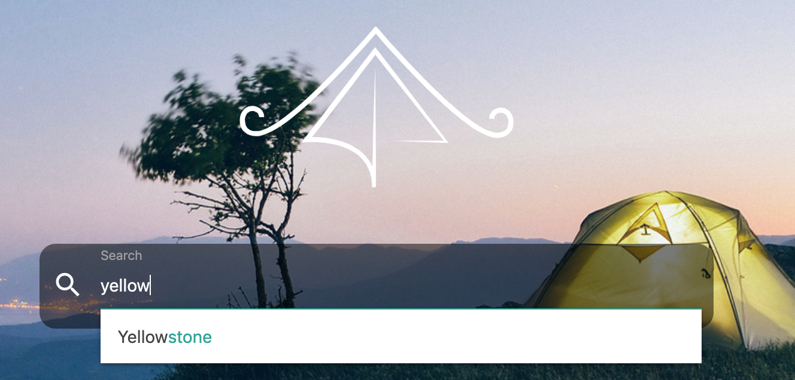
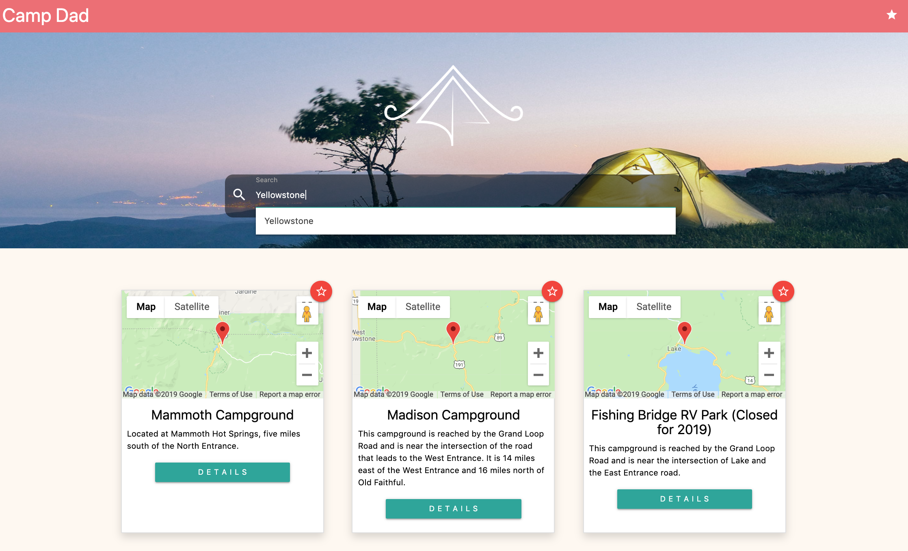
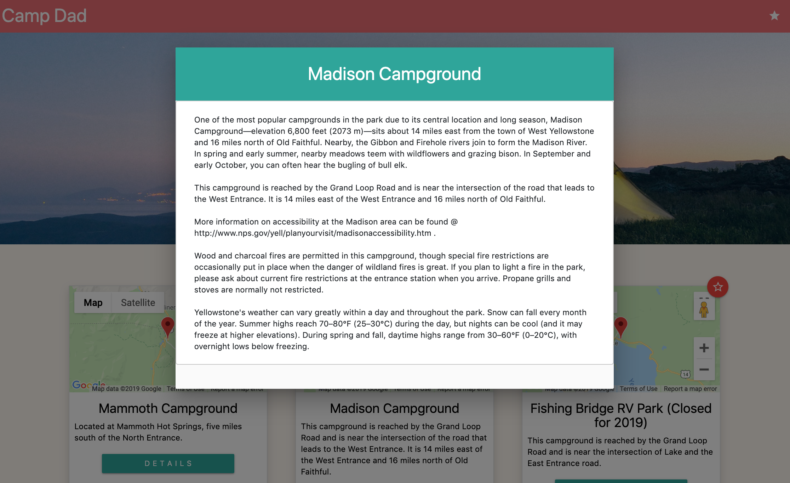
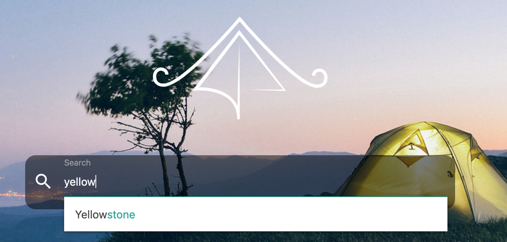
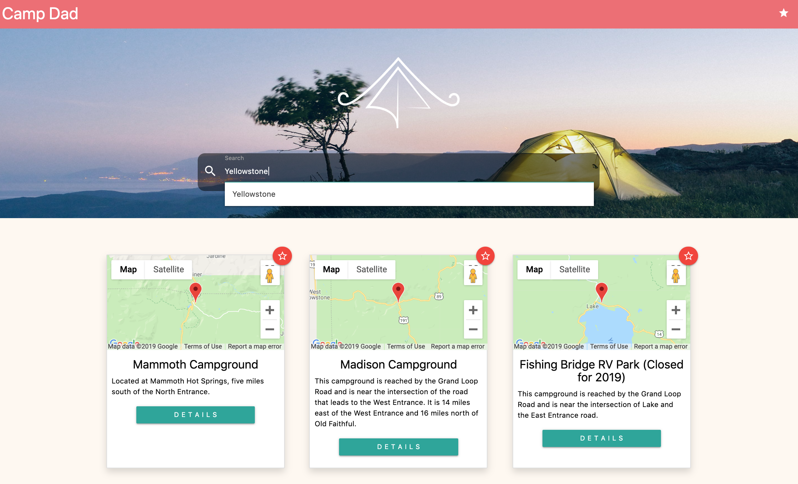
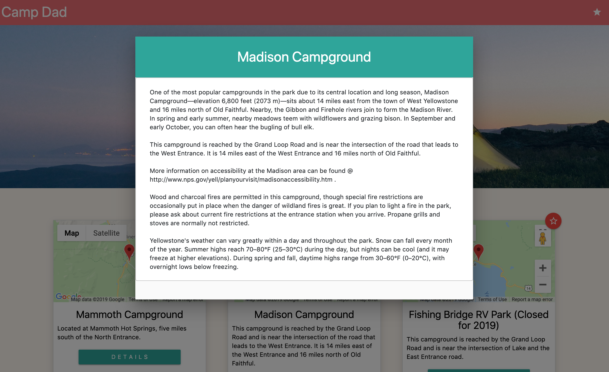

CampDad
Campdad was a collaborative project created as a group by myself, Daniel Jacobs, Matthew Hagarty, and Victoire Baron.
Campdad is designed to be a camping planner application which acts as a database for information on different campsites throuought the Unites States. The application uses the AJAX method to call upon the National Parks Service API and request information about different campgrounds. It also uses the Google Maps API to create a streetview compatible map of each campsite generated. The site features a sleek and user-friendly design that allows users to search for any national park in the country. CampDad will then search for any campsites in that park and display them as individual cards. Each card is dynamically generated and contains basic information stored in a modal as well as the Google Map. It is also possible to favorite individual campsites and have them be saved on the login screen upon startup.
CampDadSource Code
 




